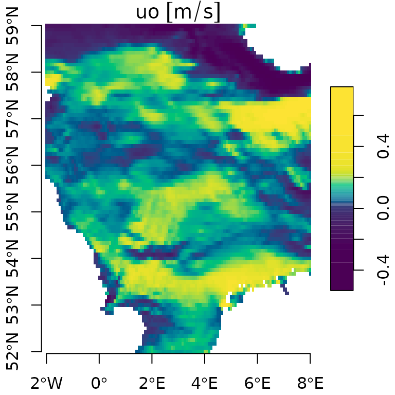

Locating a dataset
You could use the R functions cms_product_details() and
cms_product_metadata() to look for Copernicus Marine
Service data. If you prefer using a graphical user interface, you can
use the website to find a suitable dataset: https://data.marine.copernicus.eu/products.
Once you have located a suitable dataset on the website, the ‘form’ link can be used to enter a subset of the data. The screen capture video below demonstrates how this form can be used to specify a request. It also shows how you can copy this request, in the form of command line (or Python) code, to the clipboard.

Once on the clipboard, you can translate the request code to an R
named list with cms_translate().
Download data with request
The example below demonstrates how the strategy above can be used to
download a subset of data. It shows how you can translate the command
line code, obtained from the website, can be translated into a named
list.
library(CopernicusMarine)
## Example of command line code
## copied from website:
cli_code <-
"copernicusmarine subset
--dataset-id cmems_mod_glo_phy_anfc_0.083deg_PT1H-m
--variable uo
--variable vo
--start-datetime 2025-01-01T00:00:00
--end-datetime 2025-01-01T23:00:00
--minimum-longitude -2
--maximum-longitude 8
--minimum-latitude 52
--maximum-latitude 59
--minimum-depth 0.49402499198913574
--maximum-depth 0.49402499198913574"
translated <- cms_translate(cli_code)
summary(translated)
#> Length Class Mode
#> product 1 -none- character
#> layer 1 -none- character
#> variable 2 -none- character
#> region 4 -none- numeric
#> timerange 2 POSIXct numeric
#> verticalrange 2 -none- numericNote that in the example above, the code is explicitly entered in the
code and passed as an argument to the cms_translate()-call.
In most cases it is not necessary. When you leave the text
argument of cms_translate() empty, it will look for a
request on the system clipboard.
Now that you have translated the code, how can you actually download
the data? You can pass the named list as arguments to
cms_download_subset() using do.call(). Like
this:
if (requireNamespace("blosc")) {
result <- do.call(cms_download_subset, translated)
plot(result, col = hcl.colors(100), axes = TRUE)
}